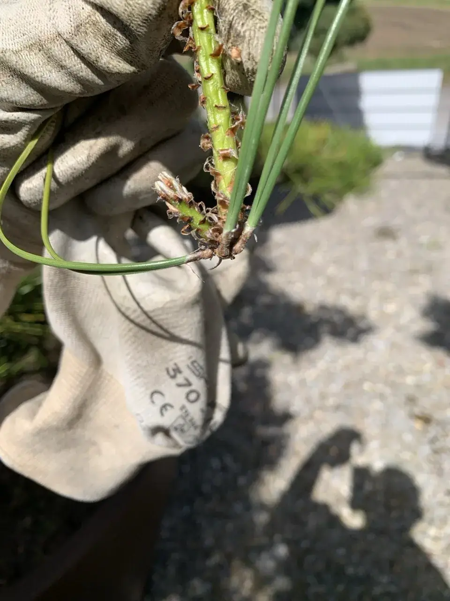
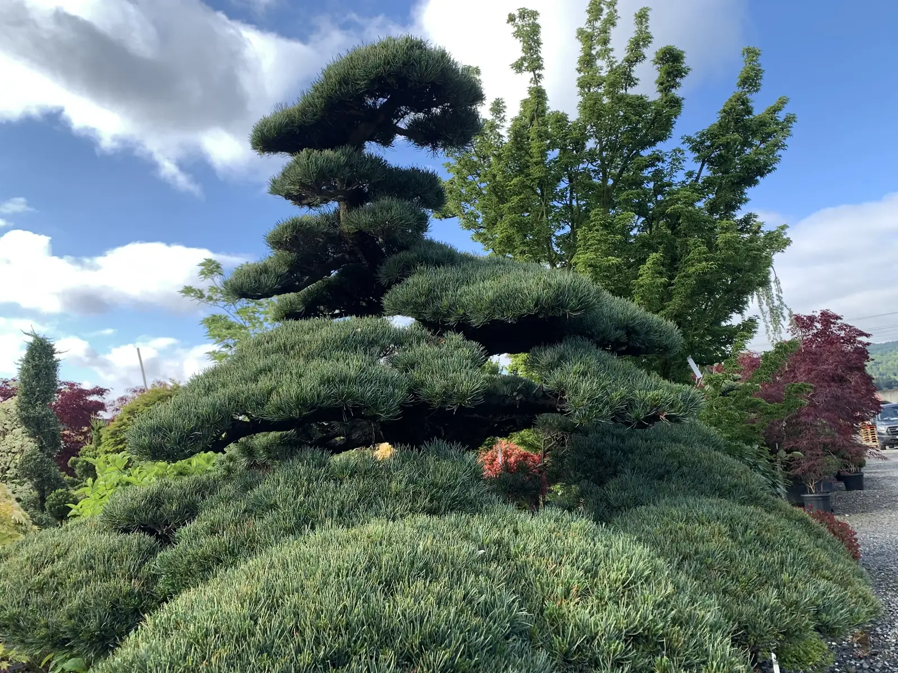

Jahr 1
Struktur — Totholz raus, Kraft neu verteilt.
Schweizer Qualität mit japanischer Philosophie.
Seit 27 Jahren forme und pflege ich japanische Ahorne, Kiefern und Niwaki in der Region Zürich — so, dass Ihr Baum über Jahre seine Form, seine Kraft und seine Gesundheit behält.
Naturgesetze kann man nicht ignorieren.
Zuerst braune Nadeln. Dann trockene Äste. Der Baum verliert einen Ast, dann zwei — und irgendwann seine Form. Doch Formschnitt ist Feinarbeit.
Es liegt nicht an Ihnen. Sie giessen, Sie pflegen — und trotzdem leidet der Baum. Es liegt am Schnitt: Wer vor mir an Ihrem Baum gearbeitet hat, hat gegen die Naturgesetze geschnitten.
Einen Ast abzuschneiden dauert eine Sekunde. Einen neuen wachsen zu lassen — Jahre.

Die Krone verbraucht Energie ungleich. Wer das ignoriert, schneidet die Kraft aus dem Baum. Ich sehe die natürliche Architektur eines Baumes — und wie er in einem, zwei, drei Jahren aussehen wird.
27 Jahre Praxis, mit Schweiss erarbeitet, geschult an der Philosophie des Dao. Nicht schnell. Richtig.


Drei Kernbereiche — kompromisslos.
Pflege und Formung von Niwaki — Bäumen im Garten, nicht im Topf. Jede Wolke erhält Raum für Licht, Luft und Kraft.

Saisonale Formung, Totholz aus dem Kroneninneren, Handarbeit gegen Pilze und Moos — bevor der Schaden bleibt.

Schwerpunkt Kiefer. Sauberer Schnitt von Hand mit feinsten japanischen Werkzeugen.

Bäume bis 3 m; grösser nach Absprache. Ich nehme pro Saison nur eine begrenzte Zahl an Gärten an.
Im Detail liegt der Unterschied.



Wie Ihr Baum über die Jahre Form annimmt.
Ich forme nicht für den Moment, sondern für die Jahre. Schon vor dem ersten Schnitt sehe ich, wohin Ihr Baum wachsen kann.
Struktur — Totholz raus, Kraft neu verteilt.
Richtung — die richtigen Triebe bleiben.

Charakter — die Form trägt sich selbst.
Senden Sie mir ein Foto Ihres Baumes. Sie erhalten zurück: meine ehrliche Einschätzung — in meinen eigenen Worten —, eine Visualisierung, wie Ihr Baum in drei Jahren aussehen kann, und, wenn er es wert ist, einen Platz in meinem Kalender.
Nur für ausgewählte GärtenEin gesunder Garten gibt Energie zurück.
Qualität statt Eile.
Vier Stunden gute Arbeit sind mehr wert als zwei Stunden schnelle. Wer am Schnitt spart, zahlt mit der Form und der Gesundheit des Baumes.
Feinarbeit von Hand.
Distanzabhängig.
Per Foto, vorab.
Erzählen Sie einfach, was mit Ihrem Baum los ist.
Kein Formular. Drücken Sie auf das Mikrofon und sprechen Sie frei: Baumart, Problem, Kanton, gewünschter Termin, Budget und Kontakt. Viktor erhält daraus eine klare Telegram-Zusammenfassung.
Datenschutz: Die Aufnahme wird nur zur Transkription und Weiterleitung Ihrer Anfrage verarbeitet. Auf dieser Website wird kein Audio gespeichert.
Bereit für eine bessere Kronenarchitektur?
Senden Sie mir ein Foto des Baumes — ich sage Ihnen kostenlos, welche Formung, Kronenpflege oder Schnittfolge sinnvoll ist. Ehrlich, ohne Verpflichtung.